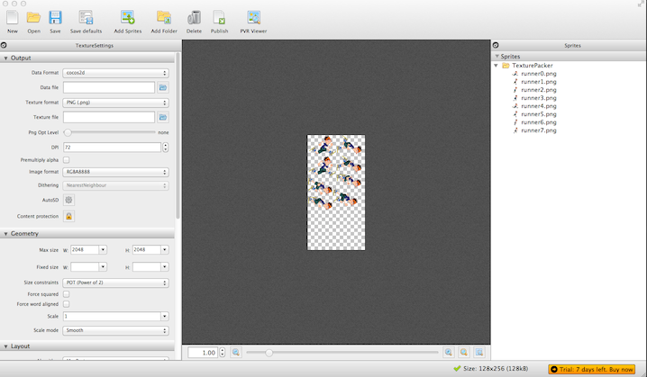
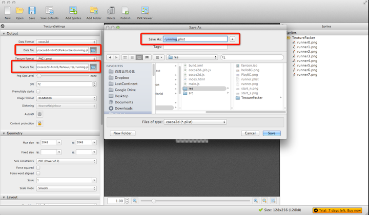
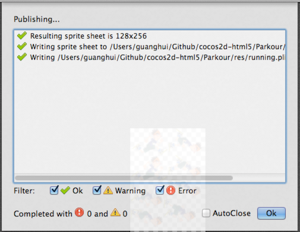
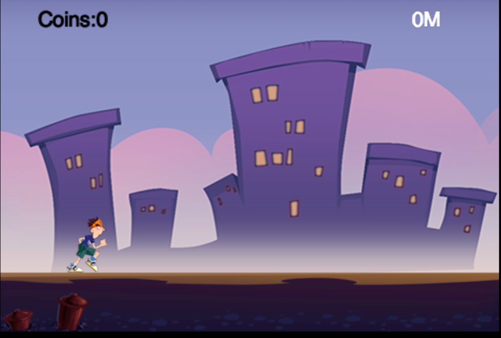

Let the Player Run Animations
Introduction
In the last tutorial, we have moved the player from one point to another. But the movement is a little wired. In this tutorial, I will show you how to run animations on the player. Thus the player's movement will be more realistic.
Before that, I want to show you an awesome tool named TexturePacker.
Introduction to TexturePacker
TexturePacker is a cross-platform GUI and command line tool to create sprite sheets! If you want to learn more about TexturePacker, go to this website for more information.
Here I will give you a brief introduction for using TexturePacker to generate the animation files we need in our game.
Build Your Own Animations with TexturePacker
Here is the building process:
- Open TexturePacker and drag the folder TexturePacker under res/TexturePacker in to TexturePacker's sprite area.

When you add new images into the TexturePacker folder, TexturePacker will automatically detect the changes and load the images.
-
Choose "data format" to "cocos2d" and "data format" to "png" from the TextureSettings panel(which is the default settings).
-
Specify the Data file and Texture file path. Here we set the path at res directory and we set the data file name to "running.plist" and the texture file to "running.png".

- Click publish. Now a dialog will appear, if there are no errors, then it will generate "running.png" and "running.plist" in the right place.

Ok, we have successfully generate the running animation files. Next let's play with the generated animation files.
Load Animations Files in Cocos2d-HTML5
Preparation
At first, we should add the running.plist and running.png to resource.js file.
var s_HelloBG = "helloBG.png";
var s_start_n = "start_n.png";
var s_start_s = "start_s.png";
var s_PlayBG = "PlayBG.png";
var s_runner = "running.png";
var s_runnerplist = "running.plist";
var g_resources = [
//image
{src:s_HelloBG},
{src:s_start_n},
{src:s_start_s},
{src:s_PlayBG},
{src:s_runner},
{src:s_runnerplist}
];
Here, we have changed the variable s_runner's value to "running.png" which is a spritesheet. We will create our player sprite from the running.png in the future.
Create Player Animation
At first, we should add the following member variables in AnimationLayer.js:
spriteSheet:null,
runningAction:null,
sprite:null,
Then we should replace the player creation method to:
this.sprite = cc.Sprite.createWithSpriteFrameName("runner0.png");
We can easily create a animation with the following code:
//1.load spritesheet
cc.SpriteFrameCache.getInstance().addSpriteFrames(s_runnerplist);
//2.create spriteframe array
var animFrames = [];
for (var i = 0; i < 8; i++) {
var str = "runner" + i + ".png";
var frame = cc.SpriteFrameCache.getInstance().getSpriteFrame(str);
animFrames.push(frame);
}
//3.create a animation with the spriteframe array along with a period time
var animation = cc.Animation.create(animFrames, 0.1);
//4.wrap the animate action with a repeat forever action
this.runningAction = cc.RepeatForever.create(cc.Animate.create(animation));
The animation is constructed from a series of small images(from runner0.png to runner7.png) in the spritesheet.
Here is the completely process to create a animation in Cocos2d-html5:
- Load spritesheet plist file into SpriteFrameCache class.
- Add animation frames to the array animFrames
- Create a cc.Animation object from the animation frame array along with a delay time between each sprite frame.
- Create the final cc.Animate object and wrap it when a RepeatForever action. Thus the animation will run infinite.
Generally, if we use animations in Cocos2d-html5, we always use SpriteBatchNode to boost game performance.
The final code of the AnimationLayer.js is:
var AnimationLayer = cc.Layer.extend({
spriteSheet:null,
runningAction:null,
sprite:null,
ctor:function () {
this._super();
this.init();
},
init:function () {
this._super();
// create sprite sheet
cc.SpriteFrameCache.getInstance().addSpriteFrames(s_runnerplist);
this.spriteSheet = cc.SpriteBatchNode.create(s_runner);
this.addChild(this.spriteSheet);
// init runningAction
var animFrames = [];
for (var i = 0; i < 8; i++) {
var str = "runner" + i + ".png";
var frame = cc.SpriteFrameCache.getInstance().getSpriteFrame(str);
animFrames.push(frame);
}
var animation = cc.Animation.create(animFrames, 0.1);
this.runningAction = cc.RepeatForever.create(cc.Animate.create(animation));
this.sprite = cc.Sprite.createWithSpriteFrameName("runner0.png");
this.sprite.setPosition(cc.p(80, 85));
this.sprite.runAction(this.runningAction);
this.spriteSheet.addChild(this.sprite);
}
});
Now, you can run the project and you will get a infinite running player in your game screen.

Summary
In this tutorial, we have learned how to use TexturePacker to generate animation and how to run animation on a sprite within Cocos2d-html5.
You can download the entire project from here.
Where to Go from Here?
In the next tutorial, we will add chipmunk physics into our game world. Thus our game will look more realistic.